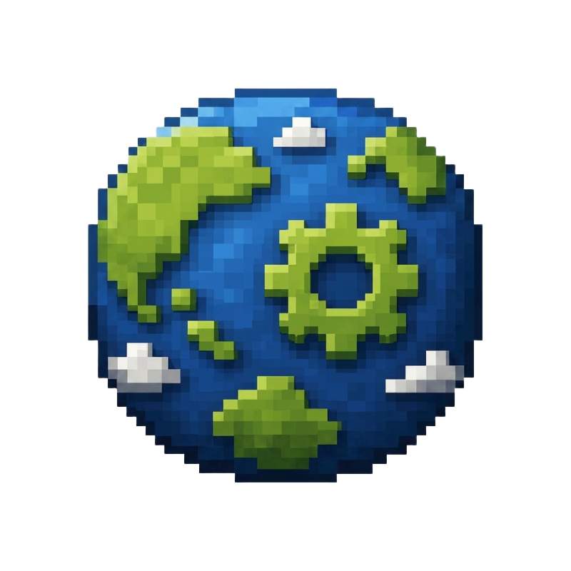

<div class="sidebar-wrapper">
  <!-- Logo Section -->
  <div class="sidebar-brand">
    
    <div class="brand-title">MULTIWORLD</div>
    <div class="brand-title">EXPORTER</div>
  </div>

  <!-- Navigation Sections -->
  <div class="sidebar-nav">
    <div class="sidebar-category-header">GENERAL</div>
    
    <a href="/" class="sidebar-item active">
      <svg class="sidebar-icon" viewBox="0 0 24 24" fill="none" stroke="currentColor" stroke-width="2" stroke-linecap="round" stroke-linejoin="round">
        <path d="M3 9l9-7 9 7v11a2 2 0 0 1-2 2H5a2 2 0 0 1-2-2z"></path>
        <polyline points="9 22 9 12 15 12 15 22"></polyline>
      </svg>

      <span data-i18n="sidebarExtractor">Extractor de Mundos</span>
    </a>

    <a href="https://github.com/ByCesarDev" target="_blank" class="sidebar-item">
      <svg class="sidebar-icon" viewBox="0 0 24 24" fill="none" stroke="currentColor" stroke-width="2" stroke-linecap="round" stroke-linejoin="round">
        <path d="M9 19c-5 1.5-5-2.5-7-3m14 6v-3.87a3.37 3.37 0 0 0-.94-2.61c3.14-.35 6.44-1.54 6.44-7A5.44 5.44 0 0 0 20 4.77 5.07 5.07 0 0 0 19.91 1S18.73.65 16 2.48a13.38 13.38 0 0 0-7 0C6.27.65 5.09 1 5.09 1A5.07 5.07 0 0 0 5 4.77a5.44 5.44 0 0 0-1.5 3.78c0 5.42 3.3 6.61 6.44 7A3.37 3.37 0 0 0 9 18.13V22"></path>
      </svg>
      <span>GitHub</span>
    </a>

  </div>

  <!-- Information Card near bottom -->
  <div class="sidebar-info-card">
    <div class="info-card-header-row">
      <div class="info-icon-square">
        
      </div>
      <div class="footer-copy-text" data-i18n="sidebarFooterCopy" style="text-align:left; margin-top:0;">
        Hecho con ❤️ para Minecraft<br/>Bedrock Edition
      </div>
    </div>
  </div>
</div>